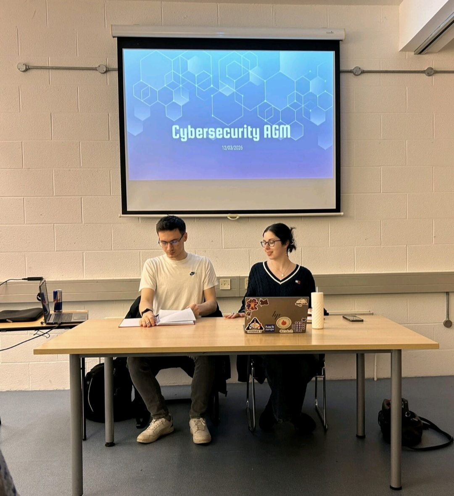
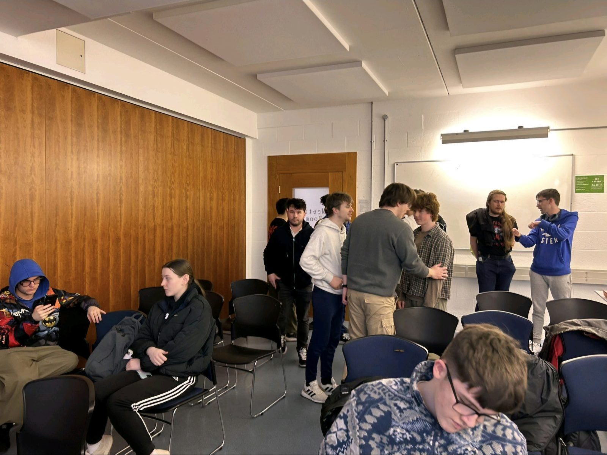
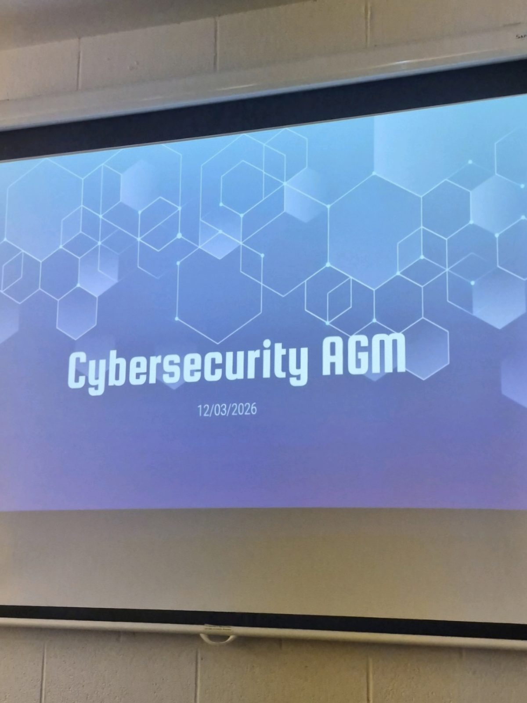

AGM & Relaunch




The society is officially active again. After almost a year of inactivity, we held our AGM to elect a board and set out our plans for the semester and beyond. From CTFs to HackSpaces to industry talks. It was here that I was elected Chairperson, becoming the first ever first-year to be elected to such a prestigious position. The turnout and engagement on the night confirmed what we'd suspected: the appetite for this community had been there all along.